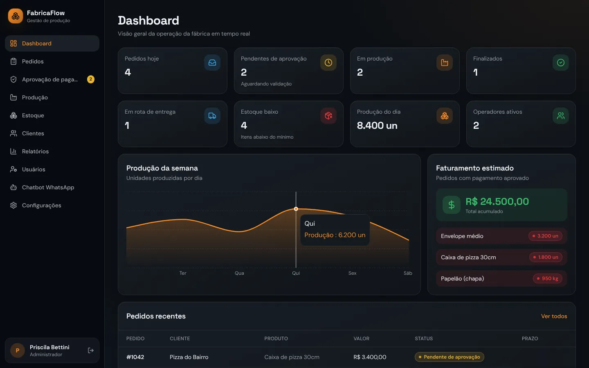

Gestão operacional para indústrias
Do pedido no WhatsApp à entrega, tudo em uma só plataforma
Atendimento, aprovação, produção, estoque e aviso ao cliente conectados, para fábricas de papel, embalagens, móveis, metalurgia e indústrias de processo. Sem digitação manual, com aprovação do gestor.
- Papelão ondulado
- Papel cartão
- Papel e tissue
- Móveis e marcenaria
- Metalurgia e serralheria
- Plásticos
- Química
- Alimentos

O problema
Onde a operação manual perde dinheiro
Quando pedido, produção e estoque vivem em conversas, planilhas e papel, o erro aparece no pior lugar: na máquina parada ou no cliente insatisfeito.
Pedidos perdidos
Mensagens espalhadas no WhatsApp, sem registro nem histórico confiável.
Controle em papel e planilha
Anotações e planilhas manuais geram erro de digitação e retrabalho.
Estoque desatualizado
Ninguém vê o saldo real. O material acaba e a produção para.
Cliente sem notícia
Sem aviso automático, o cliente liga cobrando e a equipe para para responder.
Quanto custa esperar
Faça a conta da sua fábrica
O custo da desorganização não aparece no balanço, mas está em toda semana de operação. Preencha com os números da sua operação. A conta fica só no seu navegador.
Cada mês sem controle repete essas perdas. A plataforma se paga no momento em que evita a primeira parada de máquina ou o primeiro pedido perdido.
A solução
Uma plataforma para toda a operação
Atendimento, produção, estoque e acompanhamento em um único sistema, no computador e no celular.
-
Atendimento automático
Assistente no WhatsApp recebe o pedido, calcula o orçamento e registra tudo, 24 horas por dia.
-
Gestão da produção
Setores configurados conforme a sua fábrica. Cada operador vê a fila e atualiza o status.
-
Controle de estoque
Saldo de cada material em tempo real e alerta automático quando chega no mínimo.
-
Visão em tempo real
Painel com todos os pedidos, do primeiro contato até a entrega, para o gestor decidir rápido.
Como funciona
O caminho de um pedido, em 8 etapas
Cada etapa é validada antes da próxima. Nenhum pedido entra em produção sem pagamento confirmado e aprovação do gestor.
- 1
Pedido recebido no WhatsApp
O cliente manda mensagem e o assistente entende o pedido.
- 2
Orçamento automático
Preço calculado com as suas regras e tabelas.
- 3
Cobrança enviada ao cliente
Link ou dados de pagamento vão na mesma conversa.
- 4
Cliente envia o comprovante
O comprovante fica anexado ao pedido.
- 5Decisão do gestor
Aprovação do gestor
Confere pedido e pagamento no painel e aprova em um clique.
- 6
Pedido liberado para produção
Entra na fila do setor certo, com todos os dados.
- 7
Produção no setor
O operador inicia, atualiza e conclui pelo sistema.
- 8
Cliente avisado automaticamente
Notificações no WhatsApp até a entrega.
Automático, sem digitaçãoDecisão humana, com controle
O cliente pede como já está acostumado. O sistema registra tudo.
- Entende o pedido e tira dúvidas básicas a qualquer hora
- Calcula o orçamento com a sua tabela de preços
- Envia a cobrança e recebe o comprovante na mesma conversa
- Encaminha para aprovação do gestor antes de produzir
- Avisa o cliente a cada etapa: aprovado, em produção, pronto e saiu para entrega
Atendimento · WhatsApp
Bom dia! Preciso de 2.000 caixas 40×30×20, onda B, kraft.
Bom dia! Orçamento: 2.000 caixas 40×30×20, onda B kraft. Total R$ X.XXX,XX. Prazo de 7 dias úteis. Confirma?
Confirmo.
Pedido #1482 registrado. Segue o link de pagamento. Assim que receber o comprovante, envio para aprovação.
Comprovante enviado.
Gestor aprova no painel
Recebido! Seu pedido foi aprovado e entrou em produção. Avisaremos a cada etapa.
Demonstração narrada
Veja o fluxo completo em menos de 2 minutos
Do pedido à entrega, passando pela aprovação do gestor, pela fila de produção e pelo estoque.
1min52s, com áudio.
Telas reais
O que o gestor e a equipe veem no dia a dia
Toque em cada tela para ver o que ela resolve.
Os dados nas telas são de demonstração. Produtos, setores, materiais e mensagens são configurados para a sua fábrica.
Setores que configuramos conforme a sua fábrica
- Onduladeira
- Impressão
- Corte e vinco
- Colagem
- Máquina de papel
- Corte CNC e seccionadora
- Usinagem
- Corte, dobra e solda
- Pintura
- Montagem
- Extrusão
- Mistura e envase
- Expedição
O que muda
Antes e depois da plataforma
Implantação
Implantação acompanhada, sem parar a fábrica
O prazo depende do tamanho e da rotina de cada operação. A média ideal é de 2 meses, já incluindo a operação assistida.
- Fase 1
Diagnóstico
Mapeamos como o pedido entra, como a produção é organizada, quais setores existem e quais materiais controlar.
- Fase 2
Configuração
Configuramos setores, tabela de preços, materiais, estoques mínimos e mensagens do WhatsApp. Treinamos gestores e operadores.
- Fase 3
Operação assistida
A plataforma entra no dia a dia com o nosso acompanhamento próximo, ajustando o que for preciso até a equipe ganhar autonomia.
Investimento
Condição especial de lançamento
Exclusivo para o primeiro cliente
Implantação completa
De R$ 6.000 por R$ 600
Inclui diagnóstico, configuração, treinamento e operação assistida. Condição válida para uma única empresa: a primeira que fechar.
Quero a demonstração- Mensalidade
- A combinarDefinida conforme o porte da operação, o número de usuários e os setores atendidos.
- Prazo de implantação
- Média de 2 mesesVaria conforme a operação. Inclui a fase de operação assistida.
- Próximo passo
- Demonstração de 20 minutosPor vídeo, mostrando o fluxo aplicado à rotina da sua fábrica.
Vamos conversar
Veja a plataforma funcionando na rotina da sua fábrica
Em 20 minutos, por vídeo, mostramos o fluxo completo, do pedido no WhatsApp à entrega, e avaliamos juntos se faz sentido para a sua operação.